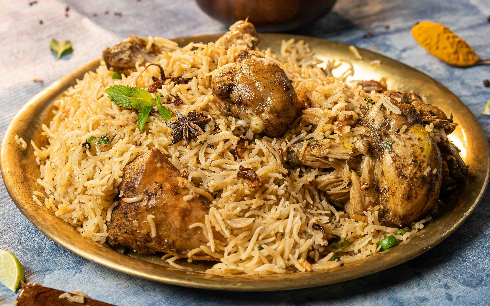

インド
ビリヤニ

ビリヤニは、インドやその周辺国で親しまれる、スパイスと肉や野菜を炊き込んだ香り高い米料理です。
特に高級米バスマティライスが使われ、幾層にも具材を重ねて蒸し焼きにするのが特徴です。世界三大炊き込みご飯の一つとも称され、地域によって様々なバリエーションがあります。
タンドリーチキン
タンドリーチキンは、ヨーグルトと様々なスパイスに漬け込んだ鶏肉を、タンドールと呼ばれる円筒形の粘土製オーブンで焼き上げたインド料理です。
赤みを帯びた鮮やかな見た目と、スパイシーでジューシーな味わいが特徴です。インドを代表する肉料理の一つとして世界中で人気があります。